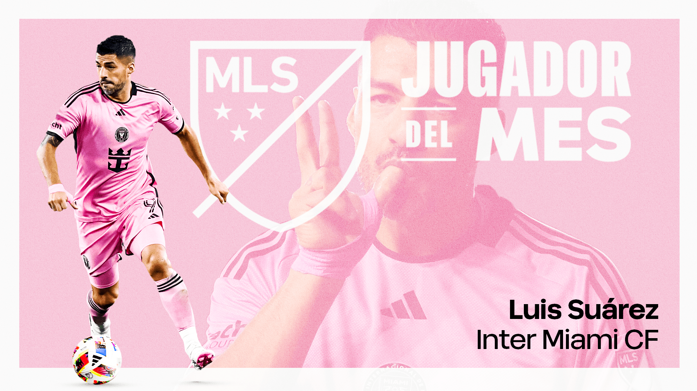

INOXIDABLE: EL 9 ELEGIDO JUGADOR DEL MES EN LA MLS
El delantero uruguayo fue nombrado el mejor jugador del mes por sus destacadas actuaciones con el Inter Miami.
Bienvenidos al sitio dedicado al máximo goleador de la historia de la selección uruguaya. Conocé su carrera, logros y actualidad.
El delantero uruguayo fue nombrado el mejor jugador del mes por sus destacadas actuaciones con el Inter Miami.
Las mini vacaciones del pistolero y su familia en un lugar paradisíaco, previo al regreso al fútbol
Las estrellas del Inter Miami llevan adelante el plan que arrancará desde cero en territorio uruguayo y ya es furor en las redes sociales